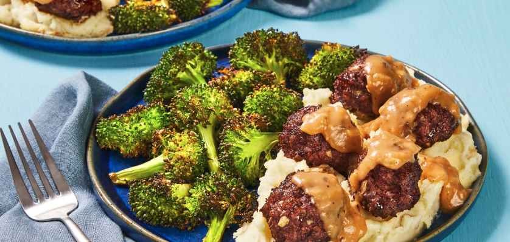

Gravy Lover’s Meatballs
with Roasted Garlic Mashed Potatoes & Broccoli

cooked on MM/DD/YYYY
Description
Famous last words: “I’ll be FINE wearing this white shirt!” Gravy loving is messy business, but it’s the business we want to be in. And in the event you find yourself wanting to eat something WITH your gravy, we created this meatball / creamy roasted garlic mashed potato / roasted broccoli for, you know, balance.
Ingredients
- Potatoes - 5
- Yellow Onion - 1
- Garlic - 3 cloves
- Broccoli - 1
- Ground Beef - 8 oz
- White Bread - 1
- Beef Stock Concentrate - 1 packet
- Sour Cream - 1 packet
- Cooking Oil, Butter, Flour, Salt, Pepper
Steps
- Preheat oven to 450 degrees. Wash and dry produce. Peel garlic; finely chop one clove (two cloves for 4 servings) and wrap remaining cloves in a small piece of foil. Halve, peel, and finely chop onion. Cut broccoli into bite-size pieces. Dice potatoes into ½-inch pieces.
- In a medium bowl, soak bread with 3 TBSP water (6 TBSP for 4 servings); break up with your hands until pasty. Stir in beef, chopped garlic, 2 TBSP onion (4 TBSP for 4; you’ll use the rest later), ½ tsp salt (1 tsp for 4), and plenty of pepper. Form into 1-inch balls; place on one side of a baking sheet along with garlic foil packet. Toss broccoli on empty side with a large drizzle of oil, salt, and pepper. (For 4, divide everything between 2 sheets.) Roast until meatballs are cooked through, broccoli is tender, and garlic is softened, 14-16 minutes.
- While everything roasts, place potatoes in a medium pot with enough salted water to cover by 2 inches. Bring to a boil and cook until tender when pierced with a fork, about 10 minutes.Reserve ½ cup potato cooking liquid, then drain and return potatoes to pot. Keep covered off heat until ready to mash.
- Meanwhile, melt 1 TBSP butter (2 TBSP for 4 servings) in a large pan over medium heat. Add remaining onion and apinch of salt and pepper. Cook, stirring, until lightly browned, 8-10 minutes. Add 1 TBSP flour (2 TBSP for 4); stir until lightly browned, 1 minute. Slowly stir in ¾ cup water (1½ cups for 4) and stock concentrate. Simmer until thickened, 2-4 minutes. Season with salt and pepper. Reduce heat to low.
- Carefully transfer roasted garlic to a cutting board; mash cloves with a fork until smooth. Add to pot with potatoes along with sour cream and 3 TBSP butter (6 TBSP for 4 servings). Mash until smooth and creamy, adding splashes of water (or milk, for an extra-rich experience—we used ¼ cup; ½ cup for 4) as needed. Season generously with salt and pepper.
- Add meatballs to pan with gravy and stir to coat. (If gravy is too thick, stir in a splash of warm water.) Divide mashed potatoes and broccoli between plates. Top mashed potatoes with meatballs and gravy.